Modified bases on single native molecules: nanopore and PacBio, modkit, haplotypes, imprinting, X inactivation and Fiber-seq
Bisulfite and enzymatic sequencing reads methylation from converted, short DNA fragments. Long-read sequencers read the native molecule, so the modification itself is part of the signal, on reads of 10 to 100 kb.
modkit pileup to a bedMethyl table.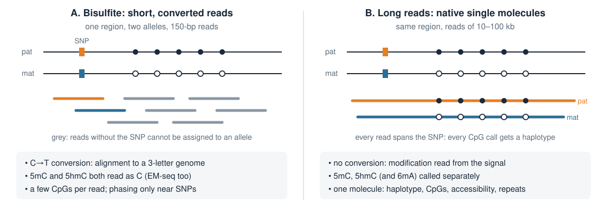
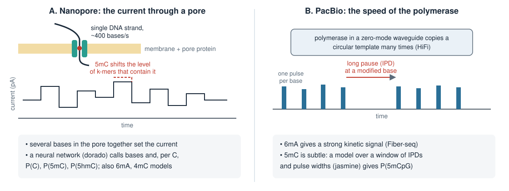
| modification | context | nanopore (R10.4.1, dorado) | PacBio HiFi |
|---|---|---|---|
| 5mC | CpG | yes, routine | yes, routine (jasmine) |
| 5hmC | CpG | yes, together with 5mC | not routinely |
| 5mC | all contexts (CHG, CHH: plants) | yes (all-context model) | limited |
| 6mA | all contexts | yes | yes (strong kinetic signal) |
| 4mC | bacteria | yes | yes |
| sample | what | region | where from |
|---|---|---|---|
| HG001 (GM12878 DNA) | nanopore R10.4.1, 4 flow cells, 5mC + 5hmC calls | 5 regions, 1.35 Mb: H19, KvDMR, SNRPN, chrX (KDM5C), chr21 33–34 Mb | ONT open data, giab_2023.05 |
| HG001 | ONT’s haplotype-resolved pileups (5mC) | chrX and chr20 | ONT open data, giab_2025.01 |
| NA12878, father, mother | SNP genotypes | same regions | 1000 Genomes 30× (2022) |
| GM12878 | WGBS (ENCODE ENCFF570TIL) | same regions | ENCODE |
| HG002 | nanopore, nuclei treated with EcoGII (6mA), and untreated | chr21 33–34 Mb | ONT open data, chrom_acc_2025.06 |
samtools view -M -L regions.bed https://...cram).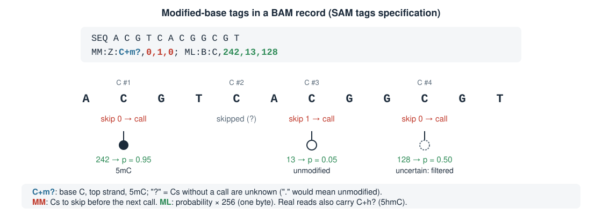
MM lists which bases carry calls (as skip counts); ML gives one probability per call, scaled to 0–255.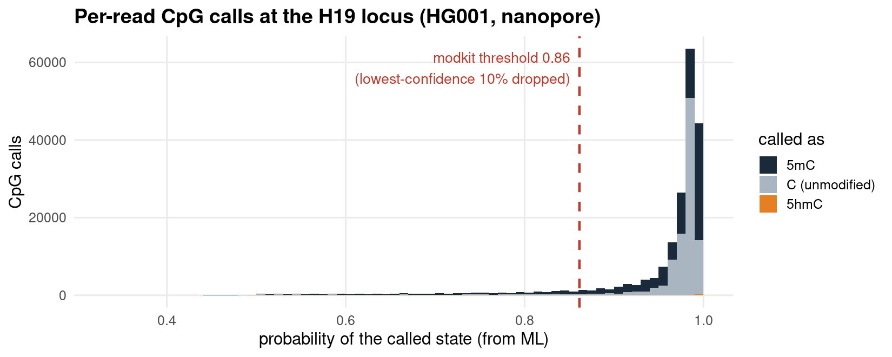
modkit estimates a threshold so that the least confident 10% of calls are discarded: 0.865 for these reads.samtools faidx $D/hg38.fa.bgz chr11 chr15 chr21 chrX > hg38_lr.fa && samtools faidx hg38_lr.fa
modkit pileup $D/hg001_ont_regions.bam hg001_cpg.bed --ref hg38_lr.fa \
--cpg --modified-bases 5mC 5hmC --combine-strands --sampling-frac 1 -t 4
grep -w m hg001_cpg.bed | head -2chr11 1960033 1960034 m 45 . 1960033 1960034 255,0,0 45 13.33 6 39 0 1 3 1 2
chr11 1960060 1960061 m 36 . 1960060 1960061 255,0,0 36 94.44 34 2 0 1 12 2 1| column | meaning |
|---|---|
| 4 | modification code: m 5mC, h 5hmC |
| 10 | N valid: calls that passed the threshold |
| 11, 12, 13 | percent modified, N modified, N canonical (C) |
| 14 | N other modification (here: 5hmC calls, for the m row) |
| 16 | N fail: calls below the confidence threshold |
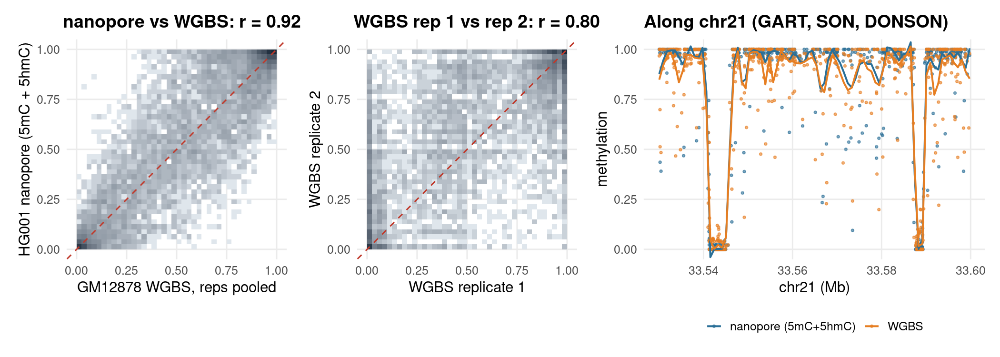
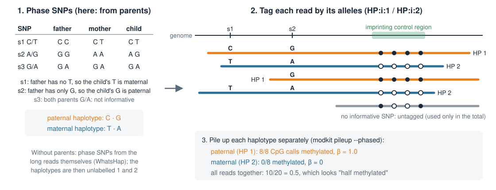
# child heterozygous, phase by transmission -> VCF with GT = paternal|maternal (awk in the exercise)
bcftools query -f '%CHROM\t%POS\t%REF\t%ALT[\t%GT]\n' $D/hg001_trio_regions.vcf.gz | awk '...' > trio_phased.vcf
bgzip trio_phased.vcf && tabix -p vcf trio_phased.vcf.gz
whatshap haplotag --ignore-read-groups --reference hg38_lr.fa \
--output-haplotag-list haplotags.tsv -o hg001_tagged.bam trio_phased.vcf.gz $D/hg001_ont_regions.bam
samtools index hg001_tagged.bam
modkit pileup hg001_tagged.bam phased/ --phased --ref hg38_lr.fa \
--cpg --modified-bases 5mC 5hmC --combine-strands --sampling-frac 1 -t 4phased/hp1.bedmethyl and phased/hp2.bedmethyl: one bedMethyl per haplotype.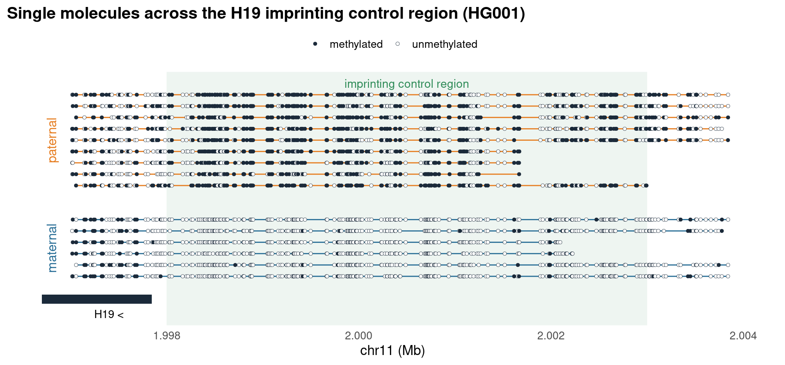
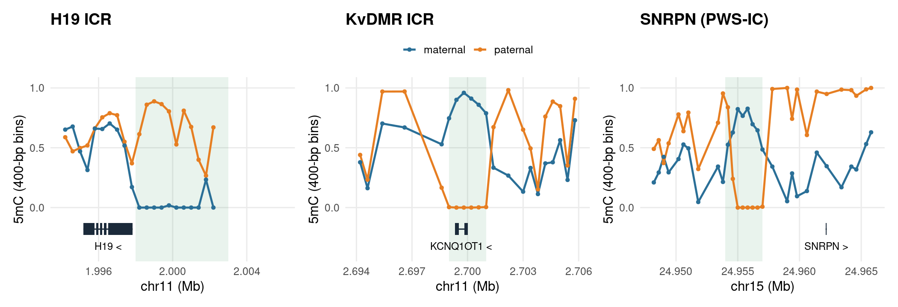
| ICR (shaded) | methylated allele, expected | paternal | maternal |
|---|---|---|---|
| H19 ICR (chr11) | paternal | 0.72 | 0.01 |
| KvDMR, KCNQ1OT1 promoter (chr11) | maternal | 0.00 | 0.90 |
| PWS-IC, SNURF/SNRPN promoter (chr15) | maternal | 0.04 | 0.75 |
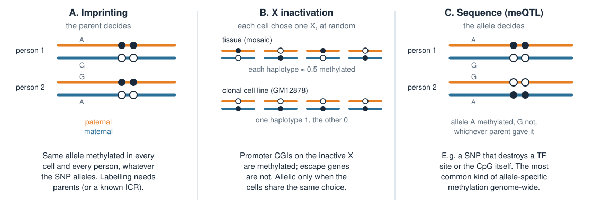
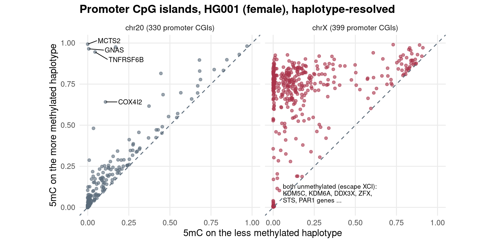
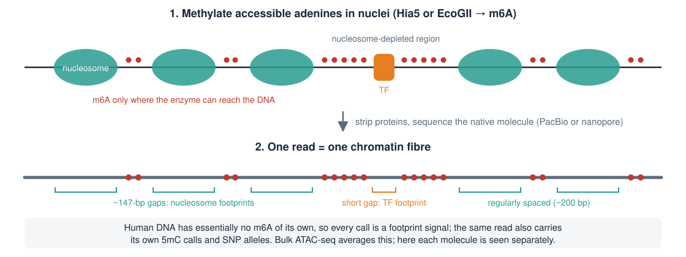
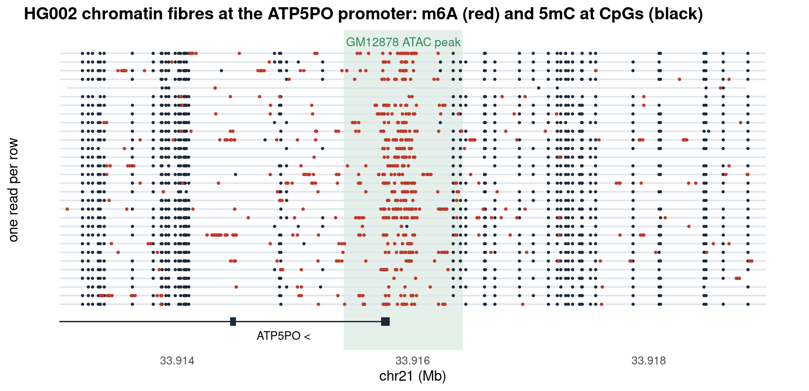
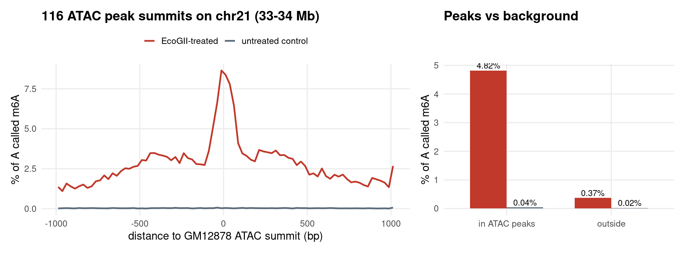
modkit open-chromatin predict (nanopore EcoGII), NanoNOMe/nanopolish for GpC data.--combine-strands assumes symmetric CpG methylation (not true for hemimethylated DNA).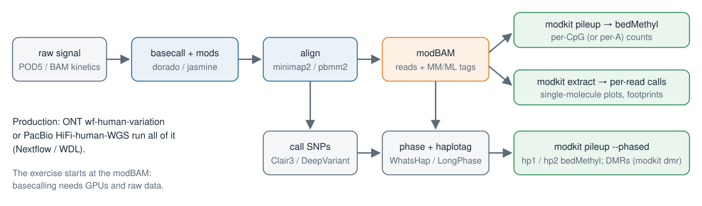
| idea | key fact |
|---|---|
| detection | nanopore: current through a pore; PacBio: polymerase kinetics; no conversion |
| what is called | 5mC and 5hmC at CpG, 6mA, 4mC; probabilities per base per read from a model |
| modBAM | MM: which bases (skip counts); ML: probability × 256; ? vs . for skipped bases |
| pileup | modkit drops the least confident 10%; level = modified / valid calls (bedMethyl) |
| vs WGBS | r = 0.92 per CpG (WGBS rep vs rep: 0.80); compare 5mC + 5hmC with bisulfite |
| phasing | het SNPs on reads → HP tags (WhatsHap); trio gives parental labels |
| imprinting | H19 ICR paternal 0.72 / maternal 0.01; KvDMR and PWS-IC maternal |
| X inactivation | 62% of chrX promoter CGIs methylated on one haplotype vs 1.5% on chr20; escapees on neither |
| Fiber-seq | m6A from an added methyltransferase marks accessible DNA on each fibre; untreated control essential |
Not required reading and not examined. For those who want the primary literature.